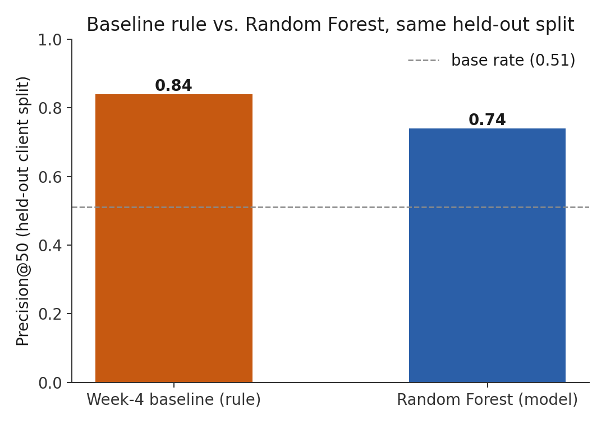
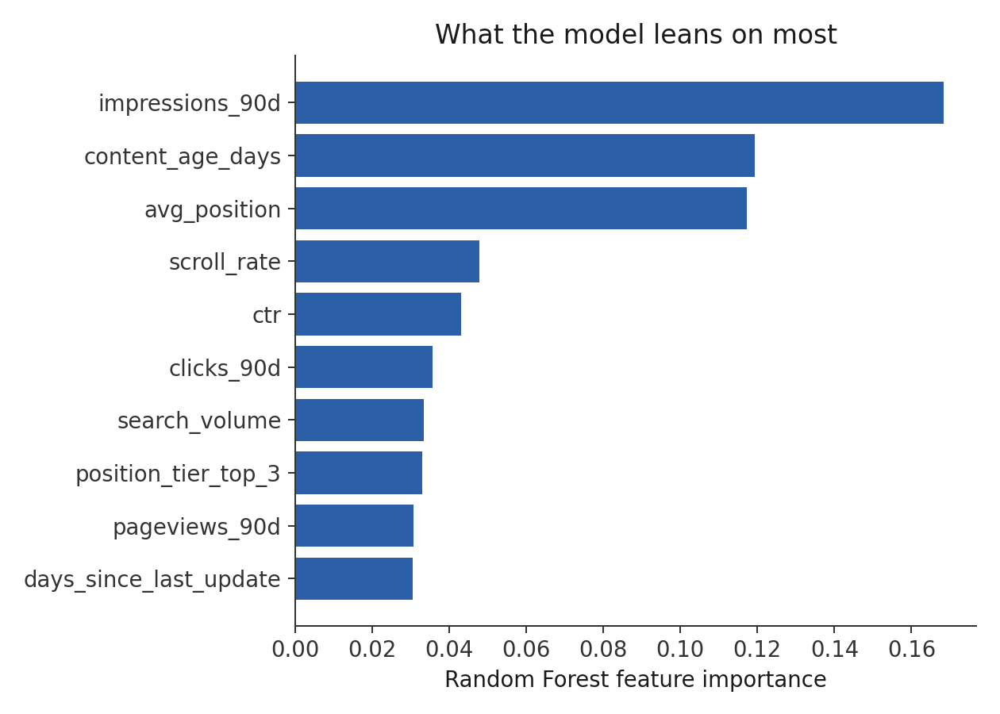
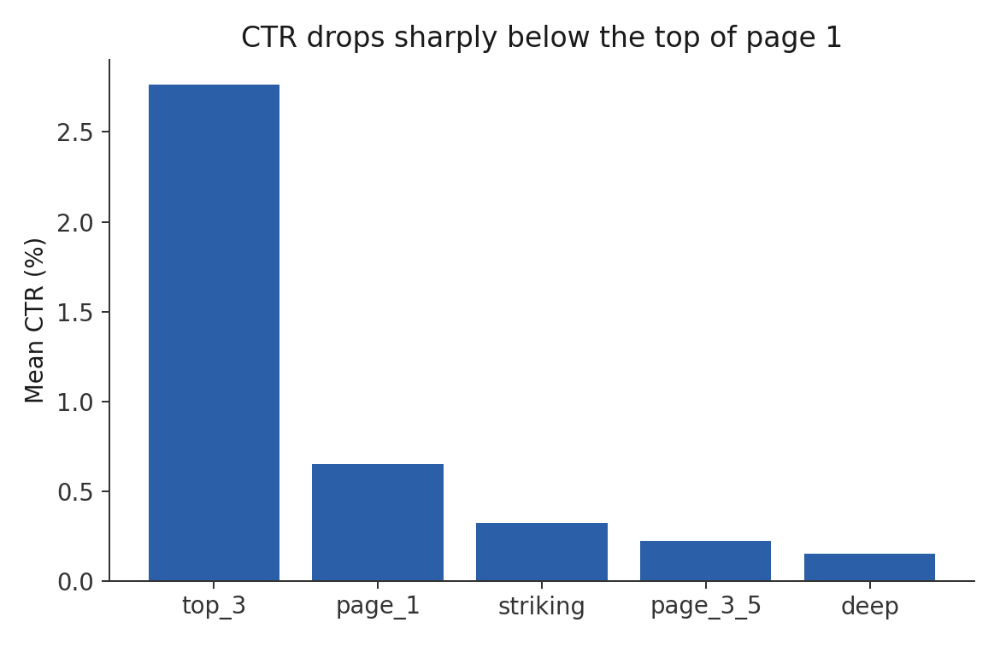
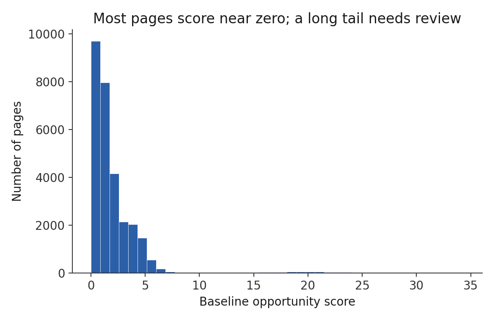
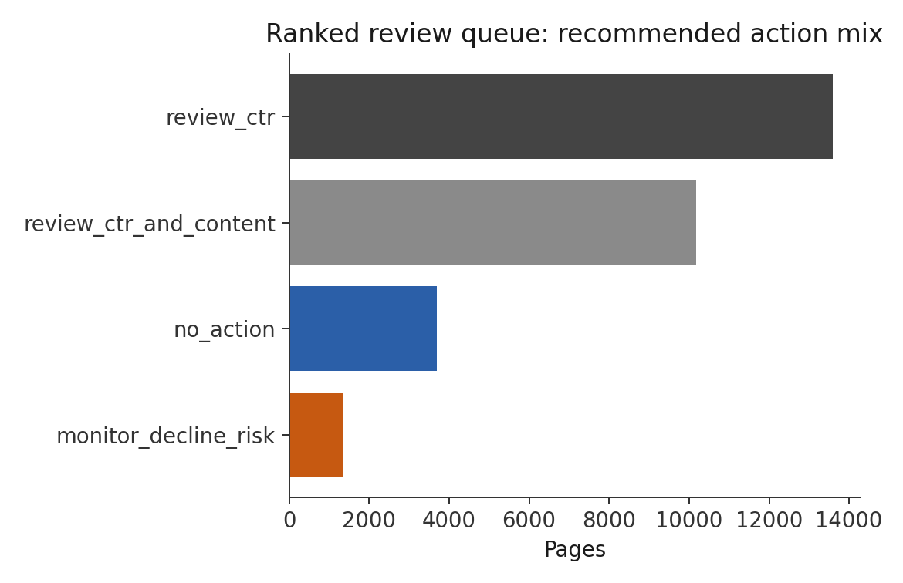

01
Introduction & the decision this supports
FlyRank publishes and monitors content at scale. Some pages rank well in Google search but still under-perform on clicks relative to other pages sitting in a similar position — exposure without engagement. Manually reviewing thousands of pages for this pattern doesn't scale, and existing product flags are hand-written rules that don't adapt to shifting signal combinations.
The decision this work supports: out of thousands of visible pages, which ones should a content or SEO reviewer look at first for a possible CTR or engagement fix? The action: produce a ranked review queue with a plain-language reason attached to every page, so a person can sanity-check the recommendation before acting on it.
This is decision support for a human reviewer — not proof of how Google's algorithm works, and not a claim that editing a flagged page will improve its CTR or ranking.
02
Data
Source: the FlyRank ML Internship starter release —
content_refresh_anonymized.csv, 30,000 rows, one row per pseudonymized content
item across 32 pseudonymized clients, trailing-90-day search and engagement metrics.
Everything below is built from this public-safe file: no client names, domains, URLs, or
private query text appear anywhere in this pipeline or its outputs.
Unit of analysis: one row = one content item (a page), as of the snapshot
date. Excluded: 1,205 rows with impressions_90d = 0
or avg_position = 0 are dropped for this lane —
avg_position = 0 means "no position data," not rank zero, and a CTR
judgement requires the page to actually be visible in search. That leaves 28,795 visible
pages.
Label: is_declining_label is not a raw column in the file
— it is derived as trend_direction == "down" (16,262 of 30,000
rows). Because it is derived from trend_direction, both
trend_direction and trend_pct are excluded from every model
feature list below; using them would mean learning the label from itself.
03
Methodology
The baseline — a transparent rule
No fitted weights, fully readable: expected_ctr = mean CTR for a page's
position_tier; ctr_gap = expected_ctr − ctr (clipped at 0);
opportunity_score = ctr_gap × log1p(impressions_90d). Every page carries a
reason code (LOW_CTR_VS_POSITION) so a reviewer can see exactly why it scored.
The model — Random Forest
Target: is_declining_label. 25 features spanning traffic, engagement, content,
and position signals (impressions, clicks, sessions, scroll rate, content age, freshness,
search volume, competition, and related fields). Excluded from features:
the label itself, trend_direction/trend_pct (the label's source
columns), and content_id/client_id (identifiers, not
measurements).
Validation design
Client-level holdout (grouped split, 20% of clients held out, seed fixed) so no client's pages appear in both train and test. A random row-level split would let the model memorize client-specific patterns and overstate its real-world skill on a client it has never seen. Train: 23,837 rows across 25 clients. Test: 6,163 rows across 7 held-out clients.
Leakage checks run
- Confirmed the label and its source columns (
trend_direction,trend_pct) are absent from the feature list, by assertion in code. - Confirmed identifiers (
content_id,client_id) are absent from the feature list — used only for grouping the split. - Base rate printed next to every metric (test-set decline rate: 0.511).
A reproducibility finding, disclosed rather than hidden: an earlier run of the modeling notebook had cached Precision@50 = 0.82 for the Random Forest, but the cells that loaded and prepared the data had since been cleared, so that number could not be reproduced. Rebuilding the notebook to run top-to-bottom on the same split and seed reproduces ROC‑AUC ≈ 0.61 (materially unchanged) but Precision@50 = 0.74 — a wider baseline advantage in the same direction. Tree-ensemble top-K metrics can be sensitive to small library-version and internal-ordering differences even with a fixed seed. 0.74, not 0.82, is the number reported throughout this paper, because it's the one this repository can actually reproduce end to end.
04
Results
On the held-out client split, the transparent baseline outranks the Random Forest at the metric that matters for this decision — which 50 pages to put in front of a reviewer first.
| Method | Precision@50 | ROC‑AUC |
|---|---|---|
| Week-4 baseline (rule) | 0.84 | — |
| Random Forest (model) | 0.74 | 0.6145 |
Base rate on the held-out test set: 0.511 — both methods clear it by a wide margin.

What the model leans on
Even though the Random Forest didn't beat the baseline, its feature importances are a useful sanity check: no single feature dominates suspiciously (which would suggest leakage), and the top signals — exposure, content age, and search position — plausibly relate to whether a page is declining.



05
Limitations & honest framing
- Not causal. This is cross-sectional, one-snapshot data. Nothing here shows that editing a page causes CTR or rankings to change — only that certain pages look worth reviewing given current patterns.
- Not a Google-algorithm model. The model learns associations in one anonymized client portfolio's outcomes, not Google's ranking system.
- Precision@50 is one evaluation point. Both methods were compared at K = 50 on one held-out client split; behavior at other K, or on a different client mix, isn't shown here.
- Thin held-out set. 7 held-out clients is a small sample for the test side of a grouped split — precision numbers could move with a different split seed. The directional finding (baseline ≥ model) held across two independent reruns, which is reassuring but not a guarantee.
ctr_gaponly compares a page to its position-tier average, not to its specific query or competitive context — a known weakness of the baseline rule, carried forward honestly rather than smoothed over.- Scope. The queue covers visible pages only (impressions > 0, a valid position); pages with zero search visibility are out of scope for a CTR-review lane by definition.
Language throughout: observed, measured, associated, directional, decision-support — never "proves," "causes," or "predicts Google's algorithm."
06
Ranked recommendations — the action playbook
The final queue combines the baseline opportunity score (60% weight — it's the
validated winner) with the Random Forest's decline-risk probability (40% weight, as a
corroborating signal) into one final_score, with plain-language reason codes
on every row. Public-safe: no content or client identifiers, no URLs.

Top of the queue (sample)
| Rank | Position tier | Impr. (90d) | CTR | Reason codes | Action |
|---|---|---|---|---|---|
| 1 | top_3 | 24,784 | 0.06% | low_ctr_vs_positionmodel_flags_decline_riskhigh_exposure | review_ctr_and_content |
| 3 | top_3 | 128,068 | 0.01% | low_ctr_vs_positionhigh_exposure | review_ctr |
| 12 | top_3 | 272,144 | 0.03% | low_ctr_vs_positionhigh_exposure | review_ctr |
| 19 | top_3 | 52,687 | 0.08% | low_ctr_vs_positionhigh_exposure | review_ctr |
Full 28,795-row queue: work/outputs/action_playbook.csv in the repository.
How to use this queue
- Intended user: a content/SEO reviewer deciding what to look at this week. Intended use: triage — narrow thousands of pages to a short, reasoned shortlist; a human opens each page and decides.
- Before acting on any row: confirm the CTR gap isn't explained by query-intent mismatch, check whether the page recently changed or is seasonal, and treat the position-tier average as a rough comparison, not a precise benchmark for that page's specific query.
- Never automate: publishing a content change from this queue alone, or treating a low rank as a reason to deprioritize a page without review.
- Re-audit triggers: position-tier CTR norms shift materially quarter over quarter; ROC‑AUC on a fresh split drops well below ~0.61; the action mix shifts sharply between comparable runs; or six months elapse, as a default cadence.
07
Reproducibility
Everything above is generated from code in the repository, not hand-typed:
work/notebooks/w01_research_question.ipynb— question framingwork/notebooks/w02_ml_task_framing.ipynb— ML task framingwork/notebooks/w03_data_contract.ipynb,w03_feature_leakage_check.ipynb— data contract & leakage auditwork/notebooks/w04_baseline_score.ipynb,w04_signal_audit.ipynb— the transparent baselinework/notebooks/w05_model.ipynb— Random Forest + comparison (see the reproducibility note inside)work/notebooks/w06_validation_audit.ipynb— honest validation & claim auditwork/notebooks/w07_action_playbook.ipynb— the ranked action queuework/notebooks/capstone.ipynb— this paper's source of truth, runs top-to-bottomscripts/build_capstone_artifacts.py— regenerates every chart and number on this page from the raw CSV in one run
Random seed fixed at 42 throughout. Repository: github.com/SUKRIT004/flyrank-ml-internship.